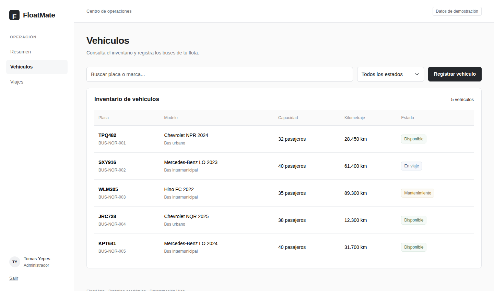
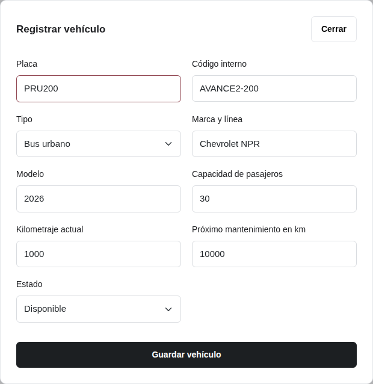
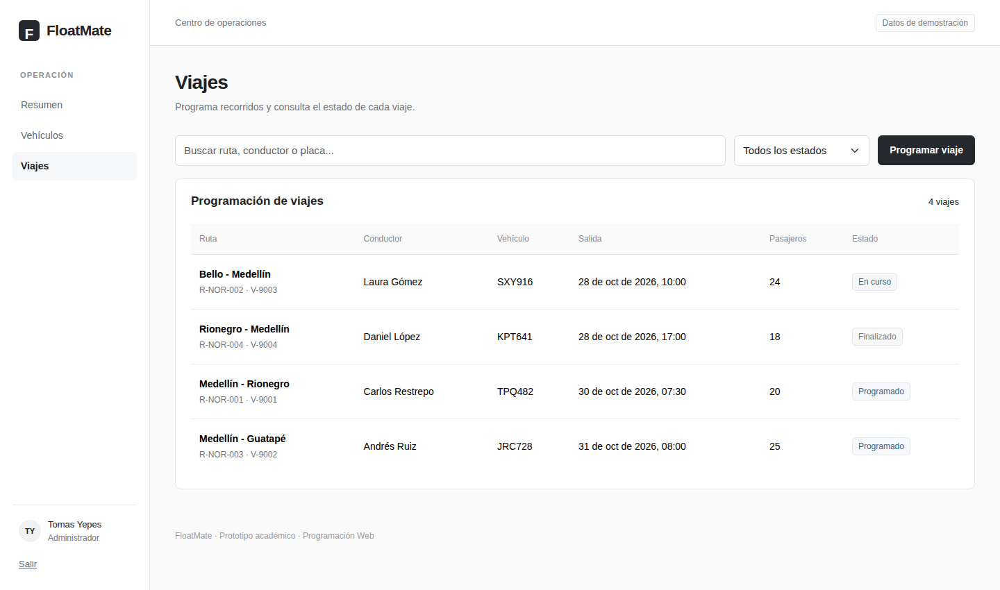
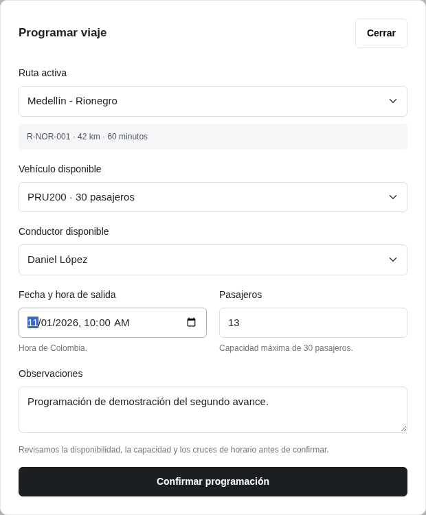
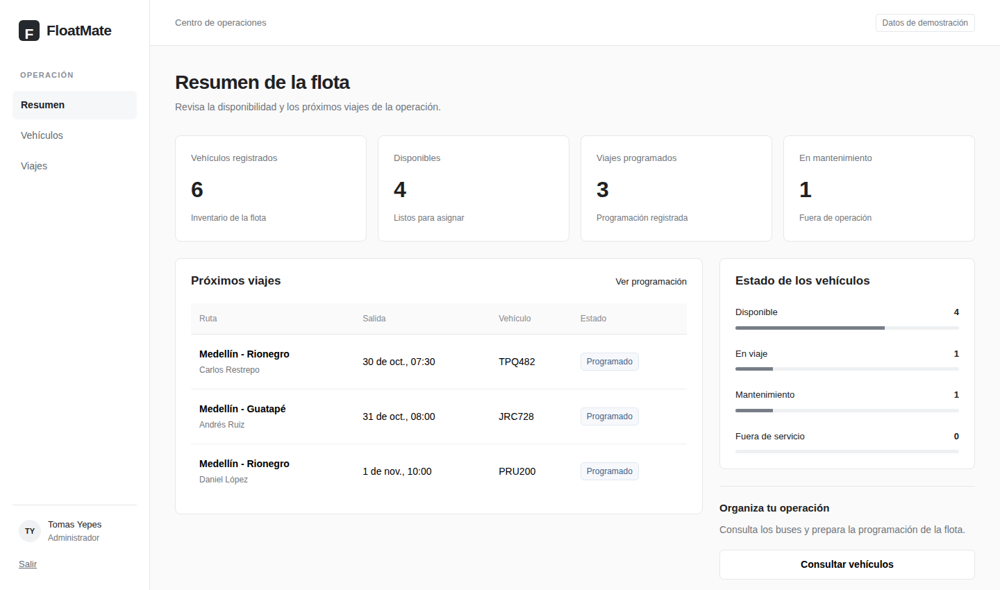
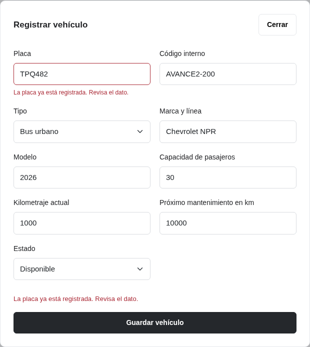
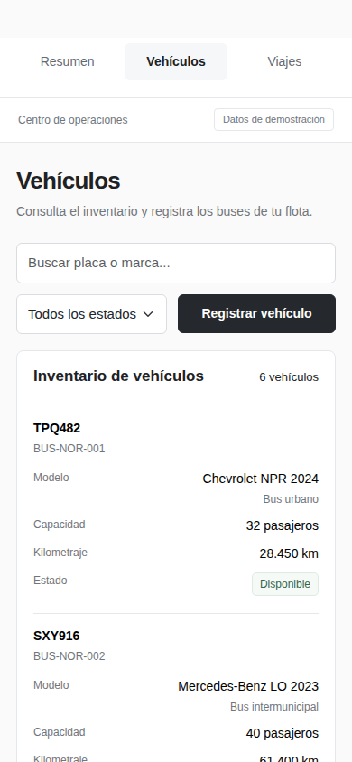
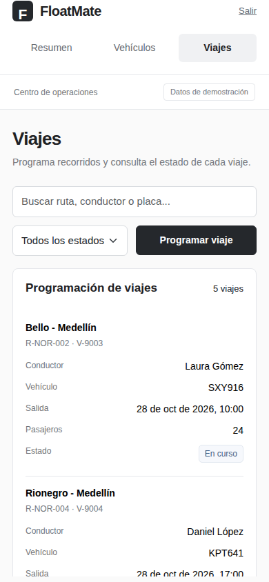
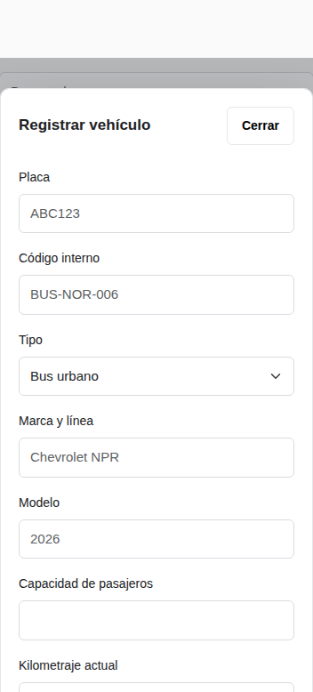
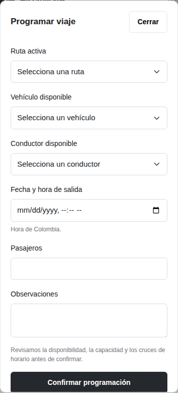

FloatMate Segundo avance
Fecha de preparación: 29 de octubre de 2026.
Qué desarrollamos
En la primera etapa teníamos el login y la vista principal. En este segundo avance agregamos las pantallas de Vehículos y Viajes, sus consultas, búsquedas, filtros y formularios. Las acciones se envían a Laravel y el panel obtiene sus cifras del mismo conjunto de datos.
Conservamos Next.js, React y JavaScript en la interfaz, Laravel con PHP en el servidor y el diseño claro de los mockups con CSS y Bootstrap. No incorporamos una base de datos.
Vehículos
La pantalla permite consultar el inventario, buscar por placa, código, marca o modelo y filtrar por estado. La búsqueda admite mayúsculas y minúsculas y no exige escribir tildes. La tabla muestra placa, código, marca, modelo, tipo, capacidad, kilometraje y estado.
Al pulsar Registrar vehículo se abre un formulario con nueve datos: placa, código interno, tipo, marca y línea, modelo, capacidad, kilometraje, próximo mantenimiento y estado. Se muestra una confirmación después de que Laravel guarda el registro.
Laravel revisa que la placa tenga tres letras y tres números, que la placa y el código no estén repetidos, que la capacidad esté entre 10 y 80 pasajeros y que los kilometrajes no sean negativos. El próximo mantenimiento no puede quedar por debajo del kilometraje actual. Los modelos admitidos están entre 2000 y 2035.
Si aparece un error, el formulario conserva lo escrito y señala el campo que se debe revisar. Cerrar el formulario sin confirmar no registra información.
Viajes
La pantalla permite consultar las salidas, buscar por ruta, código, conductor o placa y filtrar por estado. Se muestran la ruta, el conductor, el vehículo, la fecha y hora de salida, los pasajeros y el estado.
El formulario usa catálogos de ejemplo de rutas y conductores. Solo ofrece rutas activas, vehículos disponibles y conductores disponibles. Muestra la distancia y duración de la ruta y la capacidad del vehículo seleccionado.
Para programar se ingresa una fecha futura, al menos un pasajero y, si hace falta, una observación de hasta 250 caracteres. Las fechas se interpretan en la zona America/Bogota. El viaje se crea como Programado.
Antes de guardar, Laravel comprueba capacidad, disponibilidad, vigencia de la licencia y que el vehículo pueda completar la distancia antes del próximo mantenimiento. También impide que el bus o el conductor tengan horarios superpuestos con viajes programados o en curso. Para esa comprobación se toma la duración del catálogo de rutas, sin calcular tráfico ni tiempos de retorno.
La validación se realiza en el servidor aunque alguien envíe la solicitud por fuera del formulario. Una opción que quedó desactualizada en otra pestaña se vuelve a revisar antes de guardar.
Resumen actualizado
El panel ya no usa cifras fijas. Cuenta los vehículos y sus estados, los viajes programados y las próximas salidas a partir del mismo archivo que usan las otras pantallas. Al registrar un bus o un viaje, se puede volver al Resumen para comprobar el cambio.
Cómo conservamos los registros sin base de datos
Laravel utiliza el archivo local backend/storage/app/demo/flota.json. Allí guarda los vehículos, los viajes y los catálogos de ejemplo de rutas y conductores.
Los datos permanecen después de recargar, salir y volver a ingresar o reiniciar Laravel. Los registros del JSON son compartidos por las sesiones de esta instalación; no se sincronizan con otros computadores.
El archivo se crea automáticamente en el primer uso, con cinco vehículos y cuatro viajes. Dos viajes quedan programados en fechas futuras. Las fechas iniciales se calculan una sola vez, al crear el archivo; después se conserva lo guardado.
Las escrituras usan un bloqueo para evitar que dos solicitudes se pisen. Cada cambio válido se escribe mediante reemplazo del archivo. Si el contenido está dañado, no se reemplaza silenciosamente por la muestra inicial. Hay que revisar el archivo y recuperar una copia válida.
Esta solución es de demostración y será reemplazada por PostgreSQL en una etapa posterior. No incluye copias de respaldo automáticas ni administración multiusuario del producto completo.
Estructura del código
| Archivo o carpeta | Función |
|---|---|
frontend/app/vehiculos/page.js | Página protegida de vehículos |
frontend/app/viajes/page.js | Página protegida de viajes |
frontend/components/Vehiculos.js | Tabla, filtros y registro de vehículos |
frontend/components/Viajes.js | Tabla, filtros y programación de viajes |
frontend/components/Dialogo.js | Ventana modal con cierre y navegación por teclado |
frontend/components/Campo.js | Etiquetas y mensajes de validación |
frontend/lib/api.js | Envíos a Laravel con protección CSRF |
backend/app/Http/Controllers/OperacionesController.php | Consultas y validaciones de los registros |
backend/app/Services/RepositorioDemo.php | Lectura y escritura del JSON |
backend/app/Http/Controllers/ResumenController.php | Indicadores calculados a partir de los registros |
backend/tests/ | Pruebas del acceso y de las reglas de operación |
frontend/tests/recorrido.mjs | Recorrido de navegador con capturas |
API de esta etapa
| Método | Ruta | Función |
|---|---|---|
| GET | /api/csrf | Preparar el token del formulario |
| POST | /api/login | Validar la cuenta demo |
| GET | /api/sesion | Consultar la sesión actual |
| POST | /api/logout | Cerrar la sesión |
| GET | /api/resumen | Consultar cifras y próximas salidas |
| GET | /api/vehiculos | Consultar vehículos |
| POST | /api/vehiculos | Registrar un vehículo |
| GET | /api/viajes | Consultar viajes y catálogos |
| POST | /api/viajes | Programar un viaje |
Salvo la preparación del token y el login, las rutas requieren una sesión activa. Los envíos POST requieren protección CSRF. Se limitan los intentos de acceso y las solicitudes de registro.
Los errores de validación responden con estado 422 y mensajes en español. La falta de sesión devuelve 401 y un token inválido devuelve 419. Si hay un problema de conexión, la interfaz permite reintentar y no muestra una confirmación de guardado.
Instalación y ejecución
Consulta el README de la raíz para preparar una copia nueva e iniciar los dos servidores. Requisitos: Node.js 22 o superior con npm, PHP 8.4 y Composer 2. En PHP deben estar habilitadas las extensiones habituales de Laravel, como Mbstring, OpenSSL, Fileinfo, cURL, DOM, XML y XMLWriter para las pruebas.
Desde backend se ejecuta composer install, se copia .env.example a .env y se genera la clave con php artisan key:generate. Desde frontend se ejecuta npm ci y se copia .env.example a .env.local.
Luego se dejan abiertas dos terminales. En backend se usa php artisan serve --host=127.0.0.1 --port=8000. En frontend se usa npm run dev. La aplicación se abre en http://127.0.0.1:3000 con admin y floatmate123.
Los pasos de instalación y generación de clave se hacen solo en una copia nueva. No se ejecutan migraciones ni se instala PostgreSQL para probar esta etapa.
Configuración
| Variable | Función |
|---|---|
LARAVEL_URL en frontend | Dirección interna del servidor Laravel |
APP_KEY en backend | Clave generada en la instalación |
SESSION_DRIVER=file | Conservar la sesión en archivos locales |
DEMO_DATA_PATH opcional en backend | Carpeta alternativa para guardar los datos JSON |
DEMO_E2E opcional en backend | Habilitar explícitamente el recorrido de pruebas de navegador |
En uso normal no hace falta establecer las dos últimas variables. Los archivos .env, el JSON generado, las sesiones y las dependencias no se publican en Git ni se incluyen como datos del equipo en el ZIP.
Pruebas del servidor y compilación
Desde backend:
composer testDesde frontend:
npm run buildLas pruebas de Laravel crean una carpeta temporal independiente por caso y la eliminan al terminar. No modifican el JSON de uso normal y no necesitan una base de datos. Revisan acceso, persistencia, duplicados, capacidad, fechas, disponibilidad, cruces de horario y conservación de un archivo inválido sin sobrescribirlo.
Pruebas de navegador con datos separados
Este recorrido crea vehículos y viajes de prueba. Para evitar cambios sobre tus registros, primero inicia Laravel en una carpeta separada. Desde backend, en PowerShell:
$env:DEMO_E2E = 'true'
$env:DEMO_DATA_PATH = Join-Path $PWD 'storage/app/demo/pruebas-navegador'
php artisan serve --host=127.0.0.1 --port=8000Inicia Next.js en otra terminal desde frontend con npm run dev. Después, desde una tercera terminal ubicada en frontend:
npx playwright install chromium
npm run test:e2eEl navegador verifica que Laravel tenga activado DEMO_E2E antes de crear registros. Las capturas y el resultado quedan en frontend/test-results/avance-2. Si acabas de probar varias contraseñas, espera un minuto para no alcanzar el límite de acceso.
Para usar Edge instalado en Windows, establece $env:PLAYWRIGHT_CHANNEL = 'msedge' en la terminal de la prueba. Puedes usar FLOATMATE_URL para cambiar la dirección del frontend y FLOATMATE_CAPTURAS para cambiar la carpeta de evidencia.
Cuando termines, detén los servidores y abre terminales nuevas sin esas variables para volver al uso normal. No reutilices la carpeta de pruebas como archivo de operación.
Relación con los mockups
Conservamos el fondo claro, la marca F, el menú lateral, los botones oscuros, las tablas y las ventanas modales de la referencia. Los formularios incluyen los campos descritos en el PDF; por eso el de vehículos muestra más datos que la captura simplificada del formulario original.
En computador los campos relacionados se organizan en dos columnas. En móvil se usa una columna y las ventanas permiten desplazarse cuando el formulario continúa. Las capturas del segundo avance se encuentran en docs/capturas.
Qué queda pendiente
Todavía faltan la edición y desactivación de vehículos, los cambios de estado operativos de los viajes, los formularios para administrar rutas y conductores, los controles de salida, combustible, mantenimiento e incidentes, el sistema de usuarios con permisos y la conexión a PostgreSQL. Los estados existentes de los datos de ejemplo no significan que ya esté implementado el ciclo completo de un viaje.
Las verificaciones realizadas y sus resultados se describen en VALIDACION.md. Las licencias de Laravel y Bootstrap se conservan con el proyecto.
Capturas del segundo avance










Comprobaciones del segundo avance
Fecha: 29 de octubre de 2026.
Resultados
- Laravel: 26 pruebas y 123 comprobaciones correctas.
- Next.js: compilación de producción correcta.
- Navegador Chromium: 31 comprobaciones correctas.
- GitHub Actions: los tres trabajos de compilación, servidor y navegador finalizaron correctamente.
Recorrido comprobado
- resumen exige una sesión.
- vehiculos exige una sesión.
- viajes exige una sesión.
- El login rechaza una contraseña incorrecta.
- Login y resumen funcionan.
- La consulta muestra los vehículos guardados.
- El filtro de estado de vehículos funciona.
- La búsqueda vacía tiene un mensaje claro.
- Cerrar el formulario no crea registros.
- La placa repetida se rechaza desde Laravel.
- Corregir la placa retira el error anterior.
- Se registra el vehículo y aparece en la tabla.
- El registro se conserva al recargar.
- El resumen refleja el vehículo nuevo.
- La consulta muestra los viajes guardados.
- El filtro de estado de viajes funciona.
- La búsqueda sin viajes muestra un mensaje.
- El formulario solo ofrece buses disponibles.
- La fecha pasada se rechaza con un mensaje.
- El servidor rechaza el exceso de capacidad.
- El viaje creado aparece en la programación.
- El servidor rechaza cruces del vehículo.
- Las altas exigen protección CSRF.
- El panel refleja el viaje nuevo.
- Salir protege nuevamente la programación.
- El archivo conserva los registros después de salir.
- Vehículos se adapta al ancho móvil.
- El formulario de vehículo cabe en móvil.
- Viajes se adapta al ancho móvil.
- El formulario de viaje cabe en móvil.
- El recorrido no genera errores JavaScript.
Capturas
Las diez capturas del segundo avance están en capturas/. Incluyen consultas, formularios, un error de placa repetida, el resumen actualizado y las vistas móviles. Los formularios largos permiten desplazarse dentro de la ventana.
Alcance de las pruebas
Las pruebas de Laravel usan carpetas temporales independientes. El navegador se ejecutó en GitHub Actions con DEMO_E2E=true y un archivo JSON separado. No se usaron ni modificaron registros de operación del equipo.
Las comprobaciones cubren el acceso y los módulos de vehículos y viajes de esta etapa. No equivalen a pruebas de carga, operación empresarial, integración con PostgreSQL ni módulos todavía pendientes.
Ejecución de referencia
https://github.com/tomasyepes118/Floatmate/actions/runs/40941457710